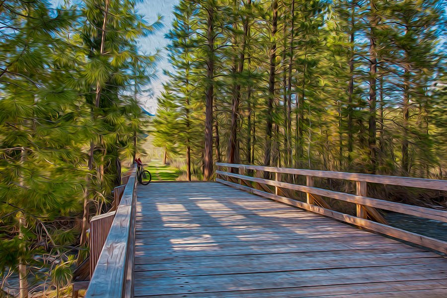

The Library · Omaste Witkowski
A Bicycle Waits at the End of a Sunlit Bridge Into the Pines
Parked at the Pines is a painterly digital landscape: a weathered plank footbridge, a forest of tall pines, and one bicycle leaning on the railing at the far end.

Choose your size, paper, canvas, metal or frame. Printed, shipped and guaranteed by Fine Art America.
Look down the planks. The railings close in from both sides, the boards narrow, and your eye runs along the bridge until it reaches an opening in the pines.
Then you notice the bicycle. It leans against the left railing near the far end, small against the tall trunks. It's the one human detail in the scene, and it makes the whole picture feel like a pause.
Choose Your Print on FAAMade to order by Fine Art America · 30-day money-back guarantee
What the eye finds, in the order it finds it
First comes the pull of the perspective. The planks and both railings converge on a single point in the trees, and the tall vertical trunks on either side hold the path in place like a frame.
Next comes the light. Bright, low sun filters through the pines and lays pale, soft-edged patches of light and shadow across the weathered grey-tan boards. Between the trees there is one small gap of soft blue sky.
Then the surface. The pine needles curl in feathery, swirling strokes, while the planks and railings keep fine wood-grain lines. The result is smooth and oil-paint-like rather than photographic, with a gentle shimmer through the foliage. It is a digital artwork with a painterly finish.
I'd rather show you what is actually in the image than invent a backstory for it. Everything above is on the page, and you can check it for yourself.
What you'll see in this piece
- A wooden footbridge with railings on both sides. The strong one-point perspective gives the wall real depth and sends the eye into the trees.
- One bicycle leaning on the left railing near the far end. It gives the eye a place to land and adds a small human note to a forest path.
- Swirled, feathery needle strokes beside fine wood-grain lines. The painterly texture keeps the scene shimmering and gives it more life than a plain trail view.
- Soft pale patches of sunlight and shadow across the planks. The light makes the bridge feel bright and open.
- Deep forest green and olive-yellow with grey-tan wood, dark brown trunks, rust bark highlights and a touch of sky blue. The palette is saturated but calm.
Where it belongs on your wall
The horizontal format and central pull suit a medium-to-large wall: over a sofa, a bed, a console or a desk, or at the end of a hallway where the perspective adds depth. The greens and warm browns sit easily with natural wood, neutral walls and cabin or lodge-style rooms.
The mood is quiet and inviting, the feeling of a bright day on a path before you move on. If you simply love how it looks, that is reason enough.
- This is for you if you want a forest-path picture with something extra, like a bicycle parked at the end of the bridge.
- This is for you if you like strong perspective that pulls the eye through the picture.
- This is for you if you prefer a painterly, textured surface to a literal photographic one.
- This is for you if you want calm greens, browns and a little blue for a living room, hallway, bedroom or home office.
What you get on Fine Art America
- Your print of Parked at the Pines, Footbridge Into the Forest, made to order by Fine Art America.
- Your choice of size, and of paper, canvas, metal or frame.
- A 30-day money-back guarantee from Fine Art America.
- Shipping from their facility, typically within a few business days.
- The listing page shows the sizes and finishes on offer, so you can compare them before you decide.
Choose Your Print on FAAMade to order by Fine Art America · 30-day money-back guarantee
Questions before you choose
Is this a real oil painting?
No. It is digital art with a painterly, oil-paint-like finish. The prints reproduce that look, and the listing medium says Digital Art - Painterly Landscape.
What size should I choose?
That depends on your wall. The listing shows the sizes available, and the horizontal format suits a medium-to-large space. Pick the size that fits where you plan to hang it.
What if it doesn't look right in my room?
Fine Art America offers a 30-day money-back guarantee, so you can order with that safety net.
Picture it above your sofa or at the end of a hallway: sunlit planks leading into the pines, and one bicycle waiting at the far end of the bridge.
When you're ready, go to the listing on Fine Art America and choose the size and finish that suit your wall.
Choose Your Print on FAAMade to order by Fine Art America · 30-day money-back guarantee
Find your own piece with the art adventure · Ask the gallery what fits your wall